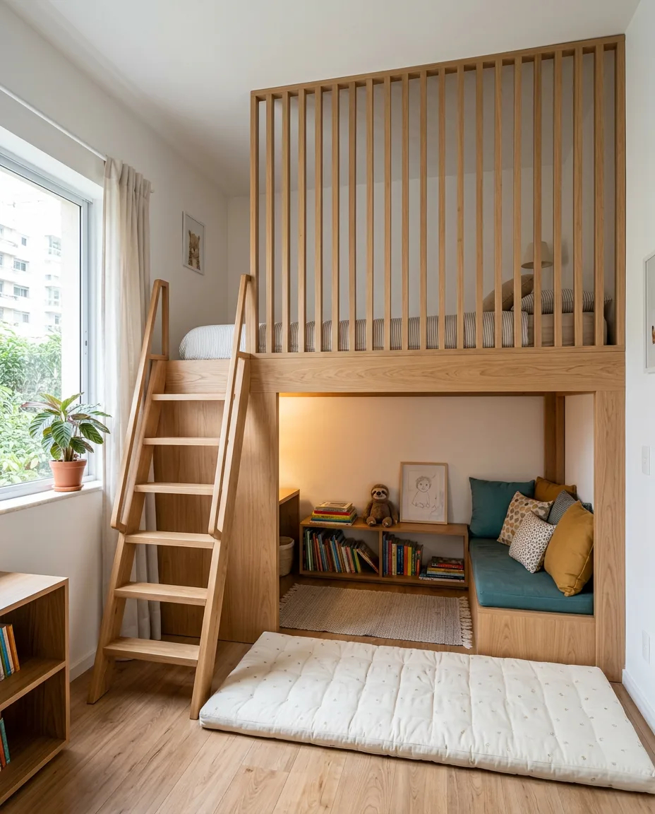
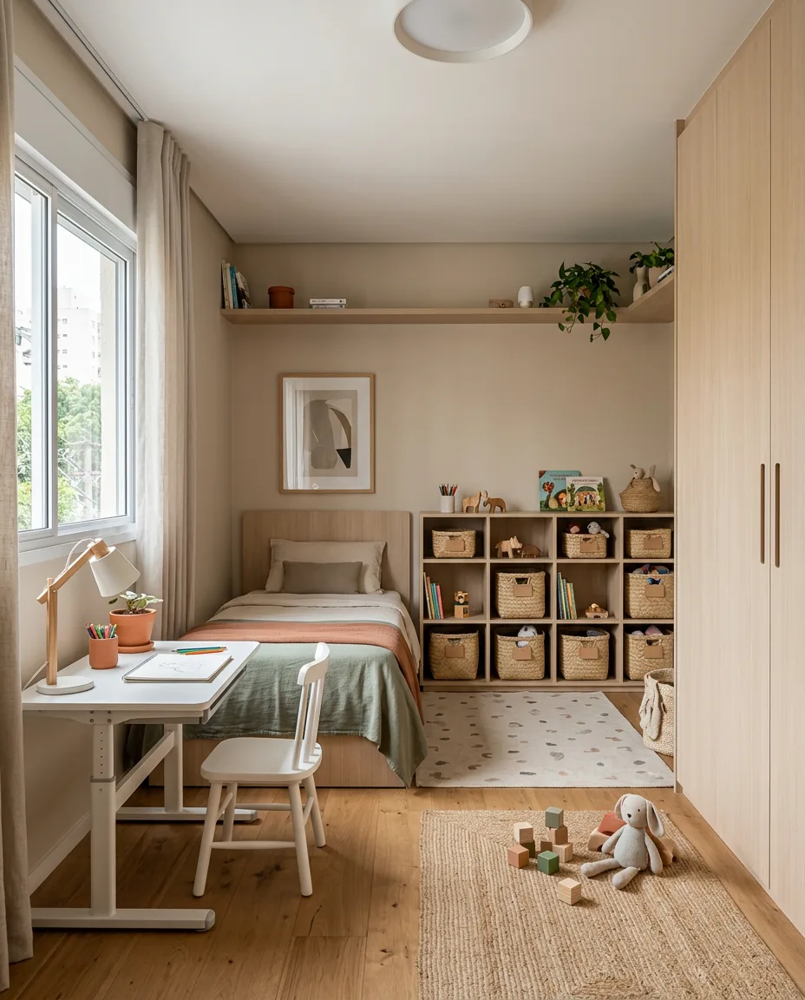

Medida que protege
Cama alta e mezanino: as medidas que deixam a brincadeira segura
Qual a altura segura de uma cama alta, beliche ou mezanino infantil? Veja as medidas de proteção, escada e teto que deixam a brincadeira tranquila.

Medida que protege
Qual a altura segura de uma cama alta, beliche ou mezanino infantil? Veja as medidas de proteção, escada e teto que deixam a brincadeira tranquila.

Cada idade, um quarto
Como montar o quarto do seu filho sem refazer tudo em dois anos? Veja como planejar a fase de hoje já pensando na próxima, da marcenaria ao colchão.

Cor, luz e tecido
Que cores usar no quarto infantil? Veja como montar a paleta, evitar excesso de cor e acertar a tinta antes de comprar a lata.

Quarto pequeno
Como organizar um quarto infantil pequeno? Deixe o centro livre, encoste os móveis e respeite as passagens de 60 e 80 cm. Veja o passo a passo.